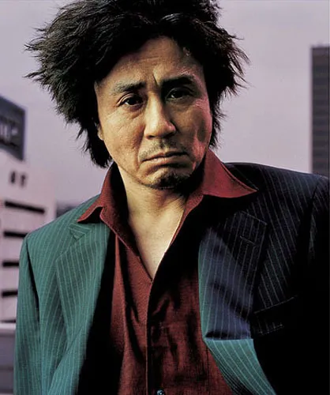
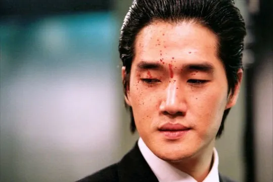
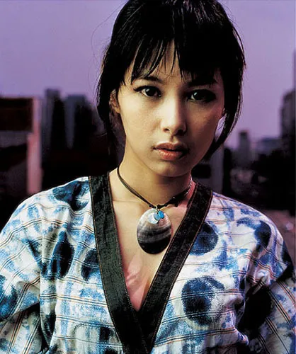

"오늘만 대충 수습하며 살자" 이름의 뜻처럼 거창하지 않고 하루하루를 살아가는 소시민이다. 이유를 모른채 감금된 이후 복수귀가 된다.

오대수를 가둔 장본인이자 그 이유를 스스로 깨닫도록 지독한 복수를 행한다.

감금생활에서 풀려난 오대수가 처음으로 교감을 한 사람. 겉으로 티내지 않지만 극심한 외로움에 시달리고 있었으며 복수를 하려는 오대수와 함께 하게 된다.